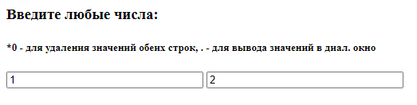

Використання бібліотеки jQuery для обробки подій на сторінці
Мета роботи
Навчитись користуватись бібліотекою jQuery, оброблювати події елементів сторінки
Обладнання
Персональний комп'ютер. Текстовий редактор Sublime Text 3 або Notepad++. Пакет програм XAMPP. Web-браузер Chrome, Firefox, Opera, MS Edge
Теоретичні відомості
jQuery - набір функцій JavaScript, що фокусується на взаємодії JavaScript і HTML. Бібліотека jQuery допомагає легко отримати доступ до будь-якого елементу DOM, обробити атрибути і вміст елементів DOM, маніпулювати ними. Також бібліотека jQuery надає зручний API для роботи з AJAX.
18-1. Логотип jQuery
За допомогою подійної системи jQuery або стандартної подійної системи браузера, створюються Веб-сторінки, які реагують на дії користувача, що робить їх динамічними і зручнішими в користуванні.
В усіх браузерах є оголошені стандартні JavaScript події, як наприклад: onclick — подія, яка виникає при натисканні на елемент сторінки, ondbclick — подвійне натискання по елементу сторінки, onmousemove — подія, яка виникає при переміщенні вказівника миші над елементом і інші. Всі вони вказуються в параметрі теґу, а їхнє значення — це код обробника даної події.
Обробники можна встановити для наступних подій:
blur — надсилається елементу, коли він втрачає фокус введення;
focus — елемент отримав фокус (наприклад, коли користувач натиснув мишею на поле для введення тексту);
load — надсилається елементу, коли він і усі його дочірні елементи повністю завантажено у браузер, дану подію можна надсилати елементам сторінки, які асоціюються з URL;
resize — зміна розмірів елементу;
scroll — прокручування сторінки;
unload — надсилається елементу window, коли користувач переміщується на іншу Веб-сторінку;
click — натискання мишею по елементу (клік вміщає натискання і відпускання кнопки миші)
dblclick — подвійне натискання по елементу
mousedown — натискання кнопки миші по елементу;
mouseup — відпускання кнопки миші над елементом;
mousemove — переміщення миші над елементом;
mouseover — переміщення миші над елементом;
mouseout — вихід миші за межі елемента;
mouseenter — вхід миші в межі елемента;
mouseleave — теж саме що і mouseout, використовуються в браузерах Internet Explorer;
change — надсилається елементу сторінки, вміст якого змінився (наприклад введення нового символу в поле для введення тексту);
select — надсилається елементу, коли користувач виділяє всередині нього текст;
submit — надсилається елементу форми, коли користувач намагається надіслати дані за допомогою форми;
keydown — натискання клавіші клавіатури;
keypress — натискання і відпускання клавіші клавіатури;
keyup — відпускання клавіші клавіатури.
Практично для кожної з подій, обробники яких можливо встановити через функцію “on”, існує функція, яка виконує таку ж дію, але являється скороченням. Тобто для події “click” існує функція click, якій передається один параметр — обробник події; для події “ready” існує функція ready і т.д.
Для прикладу надано обробку події подвійного кліка на елементі сторінки. Ця функція виконується щоразу, коли користувач подвійно натискає на даний елемент HTML. Після подвійного натиснення елемент зникає.
Синтаксис
$(selector).dblclick(function(){});
або
$(selector).on("dblclick",function(){});
Приклад
$("p").dblclick(function(){
$(this).hide();
});
Хід роботи
Перевірити чи встановлено пакет програм web-розробника XAMPP
Викликати панель керування xampp-control.exe
Впевнитись, що web-сервер Apache запущений
Перейти за адресою http://127.0.0.1/ або http://localhost/ та впевнитись, що сторінка вітання XAMPP завантажилась
Очистити зміст каталогу C:\xampp\htdocs\
Створити файл index.html в середині каталогу C:\xampp\htdocs\
Перейти за адресою http://127.0.0.1/ або http://localhost/ та впевнитись, що сторінка, яку ви створили, завантажилася корректно
Завантажити пакет бібліотеки jQuery
В каталозі з вашою сторінкою створити каталог js
Створити файл з назвою script.js та помістити його в каталог js
В каталог js перемістити файли jQuery
Підключити файл jquery*.js або jquery*.min.js внизу тіла сторінки
Підключити файл script.js внизу тіла сторінки
Створити 5 абзаців на сторінці та виконати для них наступні дії:
Шляхом додавання або прибирання класів до абзацу змінювати колір з чорного на червоний і навпаки за кліком мишою
В 5-й абзац копіювати текст тих абзаців на які наведено курсор
Створити поле вводу, в яке можна ввести розмір шрифту абзаців та застосувати це значення
18-2. Приблизний зовнішній вигляд результата
Створити 2 тестових поля вводу на сторінці та виконати для них наступні дії:
Під час введення тексту в одне поле дублювати його в іншому і навпаки
Якщо введено число "0" очищати зміст полів
Якщо введено крапку віводити повідомлення alert() з текстом із поля

18-3. Приблизний зовнішній вигляд результата
У файл script.js помістити код обробників подій та перевірити його роботу
У "підвал" сторінки та файл script.js помістити інформацію про виконавця роботи: група, ПІБ, дата виконання.
Для кожного етапу роботи зробити знімки екрану або скопіювати текст консолі та додати їх у звіт з описом кожного скіншота
Зберегти звіт у форматі PDF
Роздрукувати звіт та письмово відповісти на контрольні запитання
Контрольні питання
Що таке jQuery?
Які бібліотеки аналогічні jQuery ви знаєте?
Що таке обробний подій?
Які види селекторів jQuery ви знаєте?
Яким чином можна встановити або видалити клас деякому елементу або г
Яким чином можна встановити значення елементу форми?